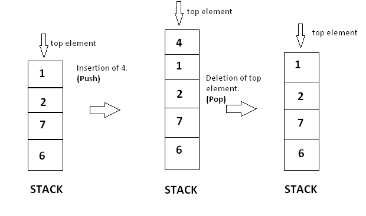

Stack
Problem Statement : Write a Java program to implement the Stack using arrays. Write Push(), Pop() and Display() methods to demonstrate its working.
Stack | Using Arrays
Stacks are linear data structures that follow the Last In First Out (LIFO) principle. The last item to be inserted into a stack is the first one to be deleted from it.
For example, you have a stack of trays on a table. The tray at the top of the stack is the first item to be moved if you require a tray from that stack.
Inserting and deleting elements
Stacks have restrictions on the insertion and deletion of elements. Elements can be inserted or deleted only from one end of the stack i.e. from the top . The element at the top is called the top element. The operations of inserting and deleting elements are called push and pop respectively.
When the top element of a stack is deleted, if the stack remains non-empty, then the element just below the previous top element becomes the new top element of the stack.
For example, in the stack of trays, if you take the tray on the top and do not replace it, then the second tray automatically becomes the top element (tray) of that stack.
Features of Stack
- Do not consume a fixed amount of memory
- Size of stack changes with each push and pop operation. Each push and pop operation increases and decreases the size of the stack by 1 , respectively.
A stack can be isualized as follows
